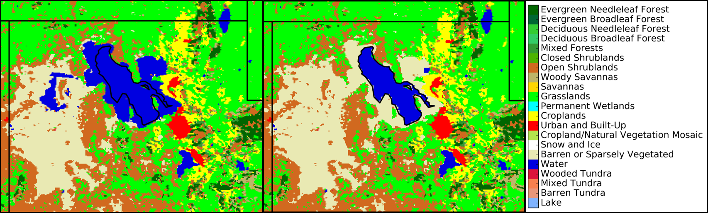
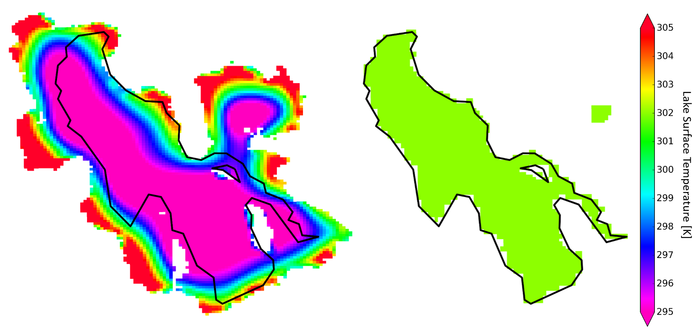
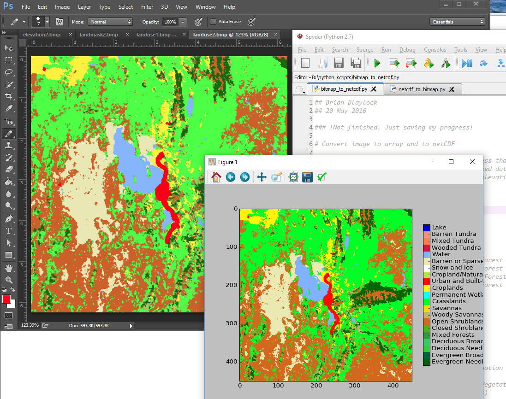
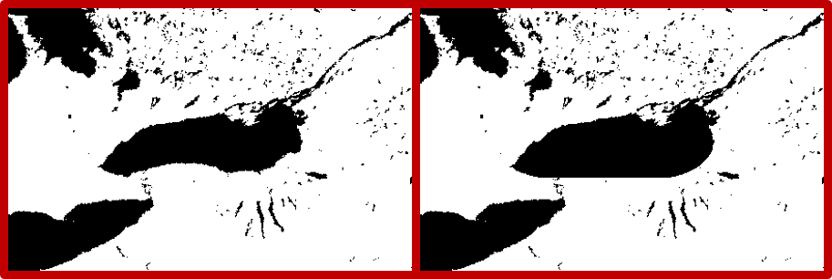

Lake Surgery
Why Perform Surgery?
We have to live with the fact that all models are wrong. Still, we can be a bit more optimistic and try to fix parts of the model. As Uncle Red would say, "If it ain't broke, you're not trying!" Here I explain how I fix the size and initial surface temperature errors in the Great Salt Lake. Please note that what I do here is a bit more sophisticated than just using duck tape.
Lake surgery is necessary because the Great Salt Lake in the available MODIS survey is too big! (This is true for other geographical data sets available to WRF users)
The HRRR model uses MODIS derived land surface characteristics in its pre-processing. We are using the same geographical data set, MODIS 30s with lake category, in our WRF simulations. The image on the right shows the land mask and elevation around the Great Salt Lake in the MODIS geographical data set versus what was observed by the MODIS true color image on 18 June 2015.
 The large lake size in the model is thought to cause issues with the strength, structure, and timing of the
lake breeze in Salt Lake City like the one on 18 June 2015.
The large lake size in the model is thought to cause issues with the strength, structure, and timing of the
lake breeze in Salt Lake City like the one on 18 June 2015.
Initial test simulations revealed that errors in the MODIS land use categorization of the GSL boundary and the HRRR initialized lake surface temperature led to poor estimates of boundary layer depth over the lake and overly strong lake breezes. Lombardo et al. (2106) recently discussed the sensitivity of sea breezes to coastline and the sea surface temperature. We likewise expected improved lake breeze simulations when the modeled lake properties are more accurate. In subsequent simulations in which changes to the lake size and lake temperature were made the boundary layer thermal and wind fields were improved. Thus, the size of the lake needs to be trimmed! I perform this lake surgery in the geo_em.d0X.nc file.
I was told that the experimental HRRR will soon use an updated land use data set with additional modifications to the Great Salt Lake for which they used this method.
shrink_GSL.py
The python script shrink_GSL.py trims the area around the Great Salt Lake using the lake boundary drawn by Python's Basemap. We trim the area using Basemap's maskoceans() function.Modifies the following 2D variables
- LANDMASK
- LU_INDEX
- LAKE_DEPTH
- SCB_DOM
- SCT_DOM
When it's finished, it will create a new geo_em_d0x.nc file. To utilize the edits, rename the file in your WPS directory and re-run metgrid.

Also need to modify the following 3D variables with another script not posted here yet:
- LANDUSEF
- SOILCBOT
- SOILCTOP
Below shows changes made to the Land Use Index where the points that are no longer lake are changed to barren land. The black lake outline is the python basemap Great Salt Lake boarder.

METGRID.TBL Modification
I don't really understand how METGRID works, but it's important when changing the lake size in geo_em.d0* files. The issue with the METGRID.TBL is that it reverts back to the old lake size when it writes the LANDSEA variable. Here is a hack: I made the following modification which masks the LANDSEA based on the LANDMASK variable, and sets the points that are not land to land.
This is important because it defines variables like Albedo and Green Area Fraction based on a lake mask.
GEOGRID.TBL Modification
There are many variables that are affected by the lake mask, so I turned all the masking off in the GEOGRID.TBL file. This way geogrid doesn't think there is a lake and we can manually add the mask to these variables later with a modified version of the shrink_GSL.py script.
Simply comment out masked=water line
Modify Lake Temperature in Initialization of Real
The lake surface temperature from the default MODIS land use input is about 6 degrees cooler than what was actually observed at the buoy. I added the following code to the WRFV3/dyn_em/module_initialize_real.F to manually change the temperature of the Great Salt Lake.
Added the code in the below textbox after the following comment and code near line 2529:
! At the initial time we care about values of soil moisture and temperature, other times are ! ignored by the model, so we ignore them, too. IF ( domain_ClockIsStartTime(grid) ) THEN account_for_zero_soil_moisture : SELECT CASE ( model_config_rec%sf_surface_physics(grid%id) )
Note: WRF doesn't vary the lake temperature at each time step. It assumes the lake surface temperature will change slowly compared to the land surface temperature, so lake surface temperature stays constant throughout the model run. Since I'm focused on a lake breeze in the afternoon I use an afternoon lake temperature to run the entire WRF simulation.
Below is the change from the default lake size and temperature to my modified temperature to 302 K.

Edit WRF fields in Photoshop
I always thought it would be nice if I could load a netCDF file into photoshop and make changes to fields with the paint brush and pencil tool. Well, now you can!, with this three step process using Python (this only works with binary arrays or categorical data sets so far). This is a work in progress and will get more attention upon need for doing this kind of work again.- Convert a netCDF array into a bitmap image netcdf_to_bitmap.py.
- Open image in PhotoShop and use the pencil tool to change colors (i.e. land use categories). Save image as bitmap.
- Open the modified land use image in Python bitmap_to_netcdf.py. and extract the colors as categories. Save array into the WRF netCDF file

As an example, Jim Steenburgh wanted to make the Lake Ontario simple on the southern coast for a test WRF simulaiton. From the geo_em.d03.nc file I created a bitmap image of the LANDMASK array, Jim modified the lake in Photoshop, I then used the new bitmap image to redefine a new lakemask and landuse index for the lake. 